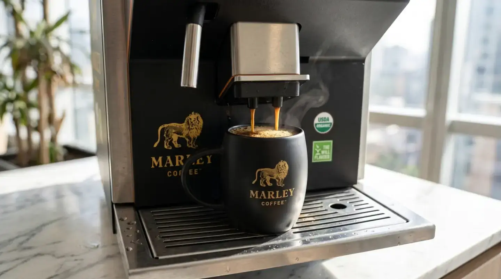

Marley Coffee · Empresas · Oficinas

¿Cómo elegir café y equipo para una oficina?
Para organizar café en una oficina, estima el consumo por jornada, identifica dónde se servirá y decide cómo las personas prepararán sus bebidas. Luego compara equipo, productos, limpieza y reposición con las necesidades del espacio y las condiciones que se acuerden.

Cómo funciona la evaluación
- Identifica las zonas: Anota cuántas personas usan cada punto de café y en qué momentos.
- Define el servicio: Compara atención por una persona y autoservicio; revisa espacio, conexiones y tareas de limpieza.
- Planifica reposición: Calcula consumo con tus registros y confirma con el proveedor plazos y disponibilidad.
Compatibilidad, disponibilidad, servicios, soporte y condiciones comerciales se confirman para cada operación en una propuesta.
Qué comparar
| Usuarios | Personas por zona y horarios de mayor uso. |
|---|---|
| Servicio | Autoservicio o atención; bebidas que se preparan. |
| Operación | Espacio, limpieza, insumos y reposición. |
Preguntas habituales de compradores
¿Qué cafetera conviene para una oficina pequeña?
Evalúa usuarios, consumo en hora punta, espacio, bebidas y quién se hace cargo de la limpieza.
¿Cuántas máquinas necesita una oficina?
Depende de la distribución y los tiempos de espera observados; no hay una proporción universal.
¿Qué incluye el comodato de una máquina para oficina?
El comodato legal es un préstamo gratuito de uso. Productos y servicios adicionales deben constar por separado en la propuesta.
Referencia legal: Código Civil de Chile, artículo 2174 · consultado el 10 de noviembre de 2026.